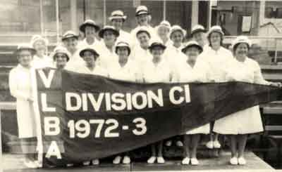

Decades of History at The Heathmont Bowls Club
The establishment of the club was conceived by Jim O’Brien, Jack Egan and Clarrie Beard J.P., who met regularly at Daisy’s Ringwood East Hotel. Realising that Heathmont was a very “dry” (non-alcoholic) area, they consequently decided to form a club and to apply for a liquor licence.
On 18 June 1957 a meeting took place at Jim O’Brien’s home. The focus of that meeting was to buy local land and to set up a social and sporting club to serve the needs of men folk from Heathmont and surrounding districts. Jim O’Brien, Jack Egan and Phil Jones successfully purchased three acres of land in Heathmont for £3,000 for the development of the club.
A committee of six members, from the 56 foundation members, was then formed to run what was then known as the Heathmont Club. Phil Jones was elected as President, Jim O’Brien and Tom Perrott as vice presidents, John Painter as secretary and Norm Loudon as treasurer.The original objectives of the club were to provide bowling greens, tennis courts, squash courts, table tennis, billiards, darts, angling and other sporting activities.The club was incorporated under the companies act on 26 August 1958. The inaugural AGM was held in November 1959, at which it was decided that the commencement of bowling green number one would begin immediately. The green was completed and ready for the 1960/61 season.
The official opening of the first green and clubhouse was performed by Royal Victorian Bowls Association vice president David Klein, and Ringwood State Member JW Manson MLA, on Saturday 17 September 1960.
One competition side was formed that year and the first game, played at home to Sassafras on 8 October 1960 was cancelled due to inclement weather conditions.
Key Years in our History
1960 foundation member, Bill Gillespie, won the club’s first championship. In the first year the Club won 38 trophies.
1962 the club’s second green was completed, a liquor licence was granted for the sale of canned and bottled beer only, railway lines were purchased from VicRail to support electric lights over the first green and a four foot chimney and fireplace was built into the West wall of the club house.
1966-67 season the club’s ladies team won their first pennant.
1972 the club’s third green was completed.
1975 a brick building extension was added to the west-side of the club house, with the addition of a new bar and lounge.
1977 the road to the club – the Greenway road – was laid at a cost of $31,000. The club house kitchen was renovated with the addition of a Carmichael gas stove and oven costing $9,000.
1978 the club fielded nine men’s and six lady’s teams in pennant competition. The car park was asphalted and ducted heating was installed in the club house.
1979 the club membership was 456.
1983 the men’s team won their first Royal Victorian Bowls Association pennant flag in Division 2.
1985 the Club celebrated its 25th birthday – since the first green was opened in 1960 – and had 437 members. A brick extension was added to the east-side of the clubhouse and was named the Ken Lucas Wing.
1989 Ken Wood Bradley, State Fours tile holder and State representative, joined the Club and expressed a desire that they build a stadium on the grounds.
1994 the third green converted to a synthetic surface.
2005 the club’s green keeper was named “Greenkeeper of the Year”.
The original objectives of the foundation members are proudly maintained to the present day. The Club is still the only pub in Heathmont and sporting activities such bowls, angling, darts and billiards are catered for.
In the 1970’s, a group of the Heathmont Club’s ladies team, on returning from celebrating at the Melbourne Cup, – a tad merry and still dressed in racing carnival attire – caused quite a stir by kicking off their high heels to play bowls in their bare feet, to protect the greens; in what is thought to have been the first ever recorded game of barefoot bowls. Since then the bare foot bowls concept has grown considerably and is emulated by bowls clubs across Australia and internationally. - Oral History